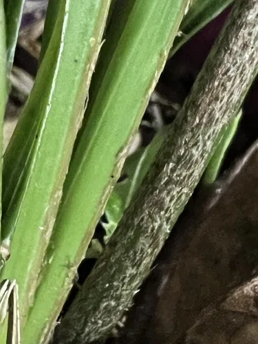

Pale marks that stay the same size
The pale marks stay the same size. A mark that is still enlarging belongs with a spot guide page. The same stable pale mark on a stem belongs with the stem guide page.

What to look for
Photograph marks and compare new leaves. Are only the exposed or rubbed surfaces of older leaves affected?
Line up the pale marks with the nearest support, wall or neighboring leaf. Repeated contact at the same height helps explain a scar confined to one side of the plant.
Possible causes and next steps
Old injury, sunscald and natural variegation can leave stable marks. Remove sources of rubbing and retain functioning leaves.
How to tell similar problems apart
Old rubbing scars generally stay put. Fresh silvery tracks, droppings or moving insects suggest ongoing feeding.
Match the mark to nearby objects. A pale arc at the height of a pot rim or window frame may trace repeated rubbing as the plant moves. Give that leaf clearance. If similar marks appear inside protected folds, inspect unfolding leaves for feeding injury instead.
What to do now
Look for a rubbing stake, tie or neighbouring branch. Reposition the contact point and photograph the scar.
On a leaf that is still expanding, the scar can stretch with the blade. Look beyond its edge for fresh injury before counting it as active spread. Compare fully expanded leaves of similar age so the normal folds and pale color of an opening bud do not obscure the change.
What to check next
Check tissue that grew after the adjustment. Clean new growth suggests the original contact was the main problem.
Match the scar to a contact point
Check the exact height of a pale mark against a stake, pot rim or a neighboring leaf with a hard edge. Gently move the contact point away and follow the next expanding leaf. A healed scar will persist, but the repeated rub should no longer mark new tissue.